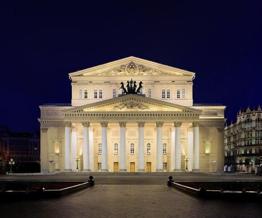
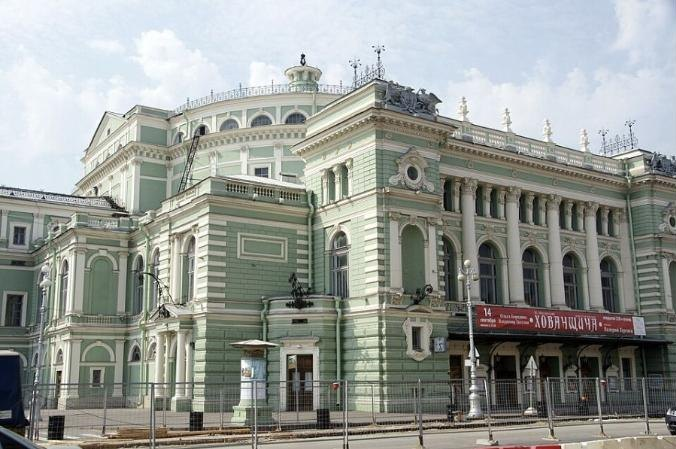
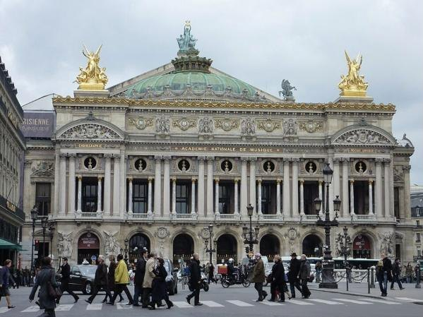
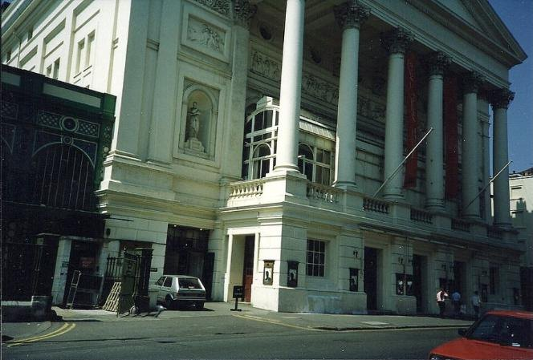

Большой театр
Москва, Россия
Основан в 1776 году. Его балетная труппа — одна из самых известных в мире. Здание с квадригой Аполлона на фронтоне — символ Москвы.
Официальный сайт: bolshoi.ru
музыка, танец и театр в одном искусстве
Балет живёт на сценах больших театров. У каждого из них своя история и своя труппа. Ниже — четыре самых знаменитых театра мира и ссылки на их официальные сайты.

Москва, Россия
Основан в 1776 году. Его балетная труппа — одна из самых известных в мире. Здание с квадригой Аполлона на фронтоне — символ Москвы.
Официальный сайт: bolshoi.ru

Санкт-Петербург, Россия
Здание открыто в 1860 году. Здесь состоялись премьеры «Спящей красавицы» и «Щелкунчика», здесь работал Мариус Петипа.
Официальный сайт: mariinsky.ru

Париж, Франция
Ведёт историю от Королевской академии музыки 1669 года. Спектакли идут во Дворце Гарнье и в Опере Бастилии.
Официальный сайт: operadeparis.fr

Лондон, Великобритания
Королевский оперный театр, дом труппы Королевского балета (The Royal Ballet).
Официальный сайт: rbo.org.uk